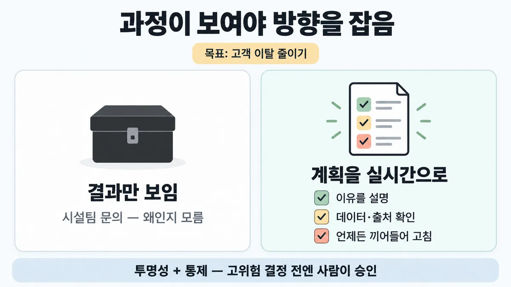
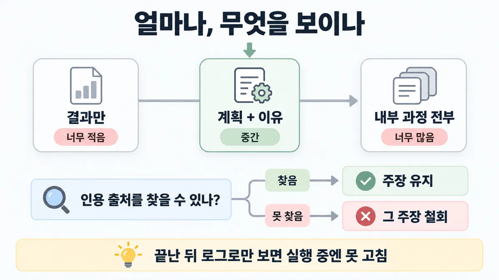

■ 과정 투명성
표시가 없는 문장은 공식 문서에서 확인한 내용이에요. 다른 표시는 읽는 법
왜 배우나 — 시험이 요구하는 것
시험 목표 5.5 편향·공정·투명 · D5 규정·안전 14%Address ethical AI considerations (bias, fairness, transparency)
이 개념으로 푸는 판단 (할 수 있어야 하는 것)
- 5.5③ 에이전트가 엉뚱한 부서에 연락했다 — 왜 그랬는지 보이게 하려면? — 투명성·설명 가능성 설계 (과정을 보이게, 적당한 양으로)
한눈에
사람이 에이전트의 문제 해결 과정을 볼 수 있어야 함. 안 보이면 "고객 이탈 줄이기"를 맡긴 에이전트가 시설팀에 사무실 배치 문의를 보내도 왜인지 모름
잘 설계하면 에이전트가 이유를 설명 → 사람이 데이터를 사실 확인하고 출처가 맞는지 보며 방향을 잡음
비유 terraform plan. apply 전에 무엇을 바꿀지 보여 주고, 사람이 보고 고친 뒤 진행


ELI5
심부름꾼이 "지금 이거 하러 가요" 하고 할 일 쪽지를 계속 보여 주는 거예요.
- 쪽지를 보면 엉뚱한 데 가는지 바로 알아요.
- 쪽지가 한 줄이면 뭘 하는지 몰라요.
- 쪽지가 백 장이면 읽다가 지쳐요.
- 이상하면 중간에 "잠깐, 그건 왜?" 하고 물어요.
개념 설명
원리
왜 보여 주나
- 에이전트는 스스로 과정·도구를 고름 → 사람이 과정을 못 보면, 맞게 가는지·왜 그 행동인지 판단 못 함 (safe-trustworthy).
- 공식 예 : "고객 이탈 줄이기" 를 맡긴 에이전트가 시설팀에 사무실 배치 문의 → 과정이 안 보이면 황당. 이유("시끄러운 자리 영업 담당 고객은 이탈률 40% 높음")를 보여 주면 사람이 데이터를 사실 확인하고 출처를 바로잡을 기회가 생김.
보여 주는 법
- 계획을 실시간으로 : Claude Code 할 일 목록. 사람은 언제든 끼어들어 묻거나 계획을 고침.
- 에이전트 3원칙 : 단순함 · 투명성(transparency — 계획 단계를 명시적으로 보여 줌) · 도구 문서화·테스트 (building-effective-agents).
- 이유에 출처 : 주장마다 인용·출처를 달게 해 감사 가능하게, 못 찾으면 철회 (reduce-hallucinations).
양 조절
- 너무 적음 → 판단 불가. 너무 많음 → 관련 없는 세부에 묻힘. 공식은 "중간을 잡되 더 다듬어야". 정답이 한 점이 아니라 "판단에 필요한 만큼".
통제(control)와 짝
- 투명성은 보기만. 고치려면 통제가 있어야 함 — 언제든 멈추고 방향 바꾸기, 고위험(high-stakes) 결정 전 사람 승인(human approval).
- 가치 정렬을 믿을 만하게 재기 어려움 → 그 전까지 투명성·통제 원칙이 특히 중요.
투명성 ≠ 기록
- 투명성 = 실행 중 사람에게 보이기. 무엇을 뒤에 남길지(프롬프트·응답 원문 보관 · 사용자 귀속)는 다른 질문 → ■ 텔레메트리 기록 범위.
규칙과 판단


갈림길
①② 얼마나 보일까 [5.5③]
너무 적음
제대로 가고 있는지 판단 못 함
너무 많음
관련 없는 세부에 묻힘
중간
계획한 행동을 실시간 할 일 목록으로 · 이유 설명
①④ 언제 보이나 [5.5③] [5.3]
언제든 끼어듦
언제든 끼어들어 묻거나 계획을 고침 · 구독 해지 같은 고위험(high-stakes) 결정 전엔 사람이 승인
늦음
실행 중엔 못 고침 업계 일반 공식은 '실시간'만 말함
③ 이유를 믿을까 [5.5③]
감사 불가
주장마다 인용·출처를 달게 해 감사 가능하게
주장 유지
사람이 출처가 맞는지 확인
철회
인용 못 찾으면 그 주장 철회
흐름
그림 속 이름·금액·시간·토큰 수는 예시예요. 공식 한도·동작은 카드 본문 값이 기준.
장면 글로 보기
칸 : 에이전트 → 할 일 목록 → 사람
규칙 (할 일 목록) : 계획한 행동을 실시간 할 일 목록으로
질문 : 사람은 무엇을 봐야 끼어들 수 있을까?
① 계획을 실시간으로 ✓
- 시작 : 에이전트 — 쪽지 : 목표: 고객 이탈 줄이기
- 보이기 : 에이전트 → 할 일 목록 : 계획을 실시간으로 — 쪽지 : ☐ 해지 설문 읽기 / ☐ 이탈 사유 묶기 / ☐ 시설팀에 배치 문의
- 읽기 : 할 일 목록 → 사람 : 이유 · 출처 확인 — 쪽지 : 3번 이유: "상담 대기실 좁다" 38건 / 출처: 9월 해지 설문
- 고치기 : 사람 → 에이전트 : 언제든 끼어들어 고침 — 말 : “3번은 빼고, 설문 원문부터 보여 줘.”
- 끝 : 사람이 계획과 이유를 보고 방향을 잡음
② 결과만 보임 ≠
- 시작 : 에이전트 — 쪽지 : 목표: 고객 이탈 줄이기
- 실행 : 에이전트 : 시설팀에 문의 — 쪽지 : 메일 → 시설팀 / "사무실 배치 바꿀 수 있나요?"
- 건너뜀 : 할 일 목록
- 읽기 : 에이전트 → 사람 : 결과만 — 왜인지 모름 — 쪽지 : 작업 완료 / 메일 1통 발송
- 끝 : 너무 적음 — 에이전트가 제대로 가고 있는지 사람이 판단 못 함
③ 전부 쏟아 냄 ≠
- 시작 : 에이전트 — 쪽지 : 목표: 고객 이탈 줄이기
- 보이기 : 에이전트 → 할 일 목록 : 내부 과정 전부 — 쪽지 : tool_call #1 … #25 / 원문 JSON 25개
- 읽기 : 할 일 목록 → 사람 : 관련 없는 세부에 묻힘 — 말 : “그래서 지금 뭘 하려는 거지?”
- 끝 : 너무 많음 — 관련 없는 세부에 묻힘
나머지 규칙
-
무엇을 남기나(원문 보관 여부 · 사용자 귀속)는 → ■ 텔레메트리 기록 범위. 투명성 = 실행 중 사람에게 보이기, 기록 = 뒤에 남기기 — 다른 질문
규칙 원문 ①②③④ (갈림길로 그린 규칙)
-
계획을 실시간으로 : Claude Code 는 계획한 행동을 실시간 할 일 목록으로 보여 주고, 사용자는 언제든 끼어들어 묻거나 계획을 고침 [5.5③]
에이전트 3원칙 중 하나 = 계획 단계를 명시적으로 보여 줘 투명성(transparency) 우선
-
양 : 너무 적음 → 제대로 가고 있는지 판단 못 함. 너무 많음 → 관련 없는 세부에 묻힘. 중간을 잡고, 공식도 더 다듬어야 한다고 인정 [5.5③]
-
이유 + 출처 : 주장마다 인용·출처를 달게 해 감사 가능하게. 응답 뒤 인용을 찾아 검증하고, 인용 못 찾으면 그 주장 철회 [5.5③]
에이전트가 이유를 설명하면 사람이 데이터를 사실 확인하고 출처가 맞는지 보며 방향을 잡음
-
투명성 + 통제 짝 : 사람은 언제든 멈추고 방향을 바꿈. 구독 해지 같은 고위험 결정 전엔 사람이 승인. 가치 정렬을 믿을 만하게 재기 전까지 투명성·통제(control)가 특히 중요 [5.5③] [5.3]
끝난 뒤 로그로만 보면 실행 중엔 못 고침 업계 일반 공식은 '실시간'만 말함
더 깊이 : 판단 규칙 · 상황 변수 (설명)
판단 규칙
| 조건 | 답 | 근거 |
|---|---|---|
| 에이전트가 왜 그 행동을 했는지 사람이 알아야 함 | 계획한 행동을 실시간으로 보여 주고 이유를 설명하게 | safe-trustworthy |
| 사람이 실행 중에 방향을 바꿔야 할 수 있음 | 언제든 끼어들어 묻거나 계획을 고칠 수 있게 | safe-trustworthy |
| 얼마나 보일지 | 궤도 판단에 필요한 만큼. 결과만(적음) · 원문 전부(많음) 둘 다 아님 | safe-trustworthy |
| 에이전트의 이유·주장을 믿어야 함 | 주장마다 인용·출처 → 감사 가능 · 못 찾으면 철회 | reduce-hallucinations |
| 되돌리기 어려운 고위험 결정 | 실행 전 사람 승인 | safe-trustworthy |
| 에이전트를 설계할 때 원칙 | 계획 단계를 명시적으로 보여 줘 투명성 우선 | building-effective-agents |
상황 변수
| 변수 | 값 | 답 쪽 | 등급 | 근거 |
|---|---|---|---|---|
| 보는 사람 | 실행을 맡긴 사용자 | 계획·이유를 실시간으로 | 판단 규칙 1 | |
| 보는 사람 | 운영팀(대규모) | 개별 대화 내용 대신 결정 패턴·상호작용 구조 → ■ 텔레메트리 기록 범위 | multi-agent-research-system | |
| 작업 길이 | 짧은 한 번짜리 | 계획 목록 부담이 큼 — 결과 + 근거로 충분할 수 있음 | 업계 일반 | — |
| 작업 길이 | 긴 여러 단계 | 계획이 중간에 틀어질 여지 큼 → 실시간 계획이 값짐 | 업계 일반 | — |
| 행동 위험도 | 읽기만 | 승인 없이 진행 (Claude Code 기본 읽기 전용) | safe-trustworthy | |
| 행동 위험도 | 수정·되돌리기 어려움 | 실행 전 사람 승인 | safe-trustworthy | |
| 규제 환경 | 원문 보관 제한 | 보이기와 남기기를 나눠 판단 → ■ 텔레메트리 기록 범위 | 업계 일반 | 미해결 1 |
연습 문제
"고객 이탈 줄이기" 를 맡은 Agent 가 시설팀에 사무실 배치 문의를 보냈다. 관리자 화면에는 끝난 작업의 결과만 뜬다결과만. 누군가 "그럼 도구 호출 원문을 전부 띄우자" 고 한다. 지금 화면의 문제는?
시험 대비
함정
- 내부 과정을 원문 그대로 전부 쏟아 보이기 → 관련 없는 세부에 묻힘
- 결과만 보이고 과정은 숨기기 → 제대로 가고 있는지 판단 못 함
- 사후 로그만 남기고 실행 중엔 안 보여 주기 → 실시간 할 일 목록 · 언제든 끼어듦 (업계 일반 대조)
- "DEBUG 로그를 전부 켜면 투명하다" → 양이 많으면 묻힘 · 원문 기록은 기본 off → ■ 텔레메트리 기록 범위
- 이유 설명만 받고 출처는 안 봄 → 인용·출처로 감사 가능하게
신호
"Humans need visibility into agents’ problem-solving processes."
"In Claude Code, Claude shows its planned actions through a real-time to-do checklist, and users can jump in at any time to ask about or adjust Claude’s workplan."
"Too little information leaves humans unable to assess whether the agent is on track to achieve its goal. Too much can overwhelm them with irrelevant details."
"Prioritize transparency by explicitly showing the agent’s planning steps."
"Make Claude's response auditable by having it cite quotes and sources for each of its claims."
더 깊이 : 뒤집히는 때 · 오답 재료 (설명)
뒤집히는 때
1. 많이 보여 줄수록 투명? — 안 뒤집힘, 오히려 반대
- 조건 : 에이전트가 단계마다 도구 호출 원문 25개를 사용자 화면에 그대로 띄움.
- 판단 : 공식은 "너무 많으면 관련 없는 세부에 묻힘". 양을 늘리는 건 투명성이 아니라 소음. 계획 요약 + 이유 + 출처가 답.
- 근거 : safe-trustworthy
2. 보여 줬는데 사람이 못 고침
- 조건 : 할 일 목록은 보이지만 실행 중 멈춤·수정 수단이 없음. 에이전트가 이미 공급사 3곳에 메일을 보낸 뒤 사람이 목록을 봄.
- 판단 : 투명성만으론 모자람 — 통제(언제든 멈추고 방향 바꾸기 · 고위험 결정 전 승인)와 짝이어야. 보기 중 "승인 게이트 추가" 가 이 상황의 답일 수 있음.
- 등급 : (원칙) · 예시 숫자는 새로 고름
- 근거 : safe-trustworthy
3. 이유를 잘 설명하는데 틀림
- 조건 : 에이전트가 그럴듯한 이유를 대지만 인용한 수치가 원자료에 없음.
- 판단 : 설명이 있다고 믿으면 안 됨. 주장마다 인용을 요구하고, 못 찾으면 철회하게.
- 근거 : reduce-hallucinations · safe-trustworthy(사실 확인 기회)
오답 재료
| 오답 | 왜 끌리나 | 왜 틀리나 | 등급 | 근거 |
|---|---|---|---|---|
| "내부 과정을 원문 그대로 전부 보여 준다" | 숨김이 없어 보임 | 너무 많으면 관련 없는 세부에 묻힘 | safe-trustworthy | |
| "결과만 보여 주고 과정은 숨긴다(깔끔한 화면)" | 사용자 부담이 적음 | 궤도에 있는지 판단 못 함 — 시설팀 연락 같은 행동이 설명 불가 | safe-trustworthy | |
| "사후 로그만 남기고 실행 중엔 안 보여 준다" | 감사 기록은 있으니 | 공식 설계는 실시간 할 일 목록 + 언제든 끼어듦 | 업계 일반 (공식 '실시간' 과 대조) | safe-trustworthy |
| "DEBUG 로그를 전부 켜면 투명하다" | 운영 습관 | 양이 많으면 묻힘 · 원문 기록은 기본 off · 저장 승인 필요 | safe-trustworthy → ■ 텔레메트리 기록 범위 | |
| "더 큰 모델로 바꾸면 엉뚱한 행동이 없어진다" | 모델 탓처럼 보임 | 문제는 과정이 안 보이는 것. 공식 처방은 투명성 설계 | 업계 일반 | — |
| "에이전트가 이유를 설명하니 믿어도 된다" | 설명이 논리적 | 사람이 데이터·출처를 확인해야 함 · 주장마다 인용 | safe-trustworthy · reduce-hallucinations |
참고
개념
출처
- 가이드 목표 5.5 공식 시험 가이드 v1.0
- safe-trustworthy-agents
- building-effective-agents
- reduce-hallucinations
상태
- 업계 일반 1줄(사후 로그만)
- ⑤ 는 다른 카드로
미해결
- 목록(5.5③) 의 "모델 버전·요청 메타데이터는 남기되 규제 환경에선 원문 전체 보관을 피한다" : 이 카드의 원문(safe-trustworthy-agents)에 없음. 원문 기록 기본 off 는 ■ 텔레메트리 기록 범위 쪽 근거 — "모델 버전을 남긴다" 문장은 이번에 찾은 원문 파일에 없어 카드에 안 넣음.
- 목록의 "주장은 인용으로 출처에 잇고" : safe-trustworthy 에는 없고 reduce-hallucinations 에 있음 → 출처를 그쪽으로 고쳐 확인.
- "적당한 양" 의 기준 : 공식도 "중간을 잡지만 더 다듬어야" 라고만 함 — 숫자·규칙 없음.
- safe-trustworthy-agents 글에 한국어판 없음 → 영어 원문만.
- 목록 영어 신호 2개는 원문에서 모두 찾음 (safe-trustworthy).